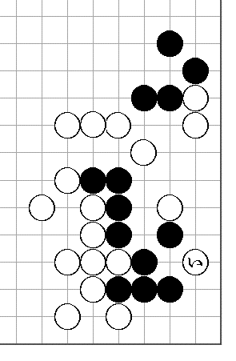
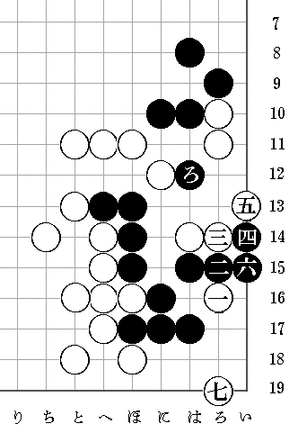

| 生命拾ひをした話 | |
| 坂口 安吾 | |
| (2012) | |
生命拾ひをした話
坂口安吾
朝日新聞の八段位獲得戦木谷七段対久保松六段の対局で呉七段の解説。参考図一
で黒が手を抜いて「い
」と打たれても生きがあるといふのである。即ち参考図二
白七
までゞ目を欠きにきても、次に黒ろ
と打つ手筋によつて黒に渡りがあるといふ。
娯楽機関の何一つない田舎では、新聞を読むのが最大の娯楽である。僕はラヂオを聴かないが、毎日ラヂオを読むのである。活動写真も音楽も読むのである。料理も薬も読む。
そのうちでも碁の欄は一日の退屈の時間だけ睨みつゞけてゐる。で、早速睨みはじめたが、渡りの手が見付からない。
黒ろ
の時白は十一
黒ろ十二
白い十二
黒に十一
と切つて次に白に十三
ときてくれると都合が良いが、ほ十二
につがれると、それまでゞある。
たうとう一日考へたが分らない。翌日目が覚めると考へはじめて、この日もたうとう分らない。翌日目が覚めると又考へはじめたので、これは容易ならん大事であると気が付いた。差当つて仕事ができないし、やがて幻に烏鷺
を睨んで寒中浴衣で蹌踉と巷を歩くやうになり、早死してしまうからである。
そこで朝日新聞社へ渡りの手順を解説してくれと葉書をだした。ホッとした。ところが熟々
考へてみるに、葉書が先方へ着いて呉七段の所へまはつて解説が新聞にでる迄には四日も五日もかゝる筈だし、解説してくれないかも分らない。愈々一命にかゝはるのである。
これは危険だと気が付いたから、早速岡田東魚初段のところへ大至急御教示にあづかりたいと手紙をだしてやれ安心と思つたが、熟々考へてみると、これ又返事がくる迄には三日かゝるのである。もはや一命おぼつかないから、僕はガバとはね起きて、汽車に乗り、まつしぐらに東京へ着いた。
本郷の富岡へ行つた。この碁会所はアマチュアの大関格が沢山集つてゐるのである。生憎大関が居なかつたから、居合した帝大の選手連中に解答をもとめた。この連中は碁打のアカデミシアンで呉七段だの秀策を科学的に信頼してゐる。だから隠れた粋な手筋がある筈だと面々汗だくで唸りだしたが駄目なのである。
で、今度はアテネ・フランセへ電話をかけた。仏蘭西の学校へ何用でとお考へかも知れないが、近頃、碁の用はこの学校が間に合ふのである。即ち、野上二段、岡田初段が駈けつけてきたではないか。手品のやうな学校であります。
そこで結局どういふ事になつたかといふと野上岡田三段（合せて）も渡りの筋を見付けることが出来なかつた。呉七段の読違ひといふ結論に達し、僕は一命を拾つたばかりでなく軍歌を歌つて我家へ帰つた。
途中、上野は砂子屋へ立寄り尾崎一雄大人を吃驚させて益々快的に帰宅しようかと思つたが、やめた。といふのは、囲碁春秋には鉢巻の大人も随筆を書くさうだから、大人は随筆の名人だが、棋譜入りの随筆は書けないに極つてゐて、その時全く落胆し、垂涎するに極つてゐるからであつた。

Ⅸ（参考図一）

Ⅸ（参考図二）
底本：「坂口安吾全集 03
」筑摩書房
１９９９（平成11
）年3
月20
日初版第1
刷発行
底本の親本：「囲碁春秋 第四巻第一号」
１９４０（昭和15
）年1
月1
日発行
初出：「囲碁春秋 第四巻第一号」
１９４０（昭和15
）年1
月1
日発行
入力：tatsuki
校正：noriko saito
２００８年9
月16
日作成
２０１２年5
月17
日修正
青空文庫作成ファイル：
このファイルは、インターネットの図書館、青空文庫（http://www.aozora.gr.jp/）で作られました。入力、校正、制作にあたったのは、ボランティアの皆さんです。